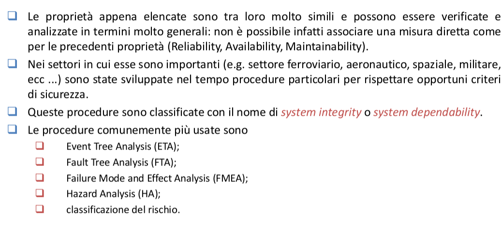

Safety (sicurezza): capacità di un sistema di non causare danni a cose, a persone e/o all’ambiente.
Dependability: è una proprietà del sistema che giustifica il fare affidamento su di esso (in questa
accezione è spesso tradotta con il termine “fidatezza”); copre gli aspetti di reliability,
availability, safety e altri di importanza nei sistemi critici.
Integrity (integrità): è la capacità del sistema di individuare fault durante il suo normale
funzionamento e di informare l’operatore umano.
